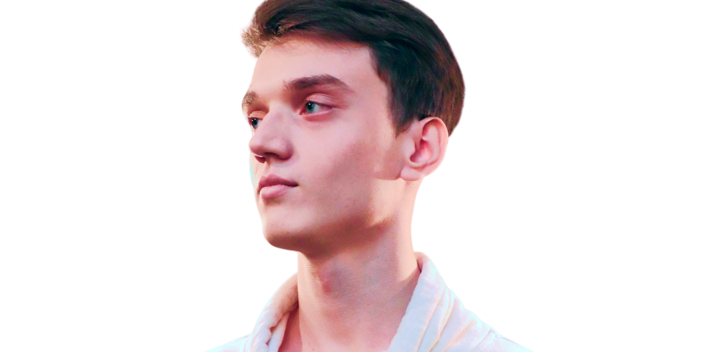
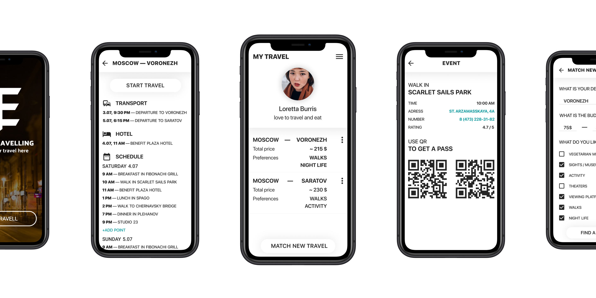
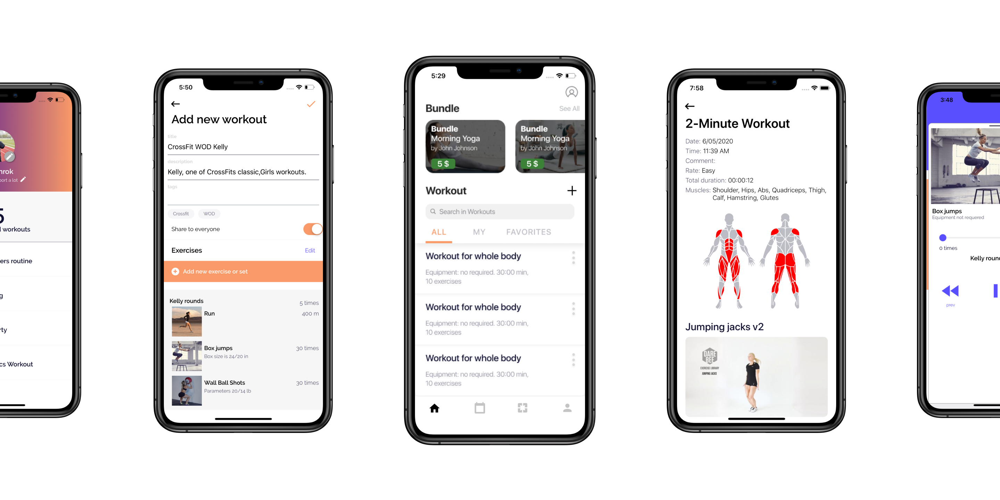
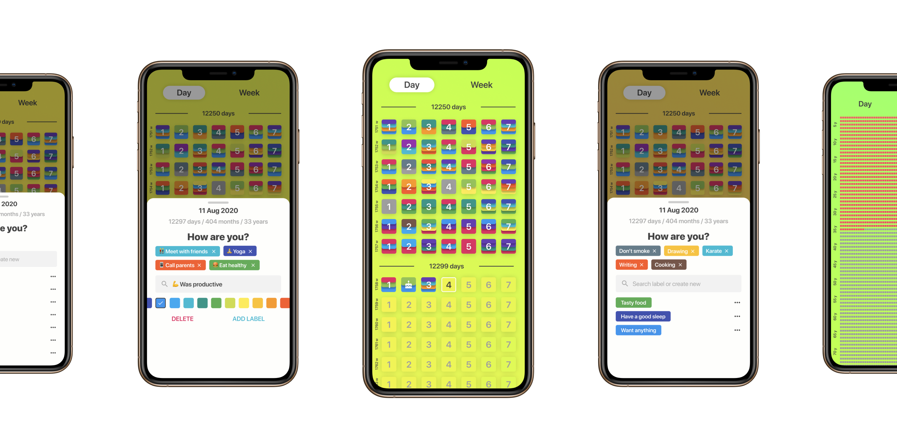

Hi! I'm Max Kulakov
and I'm a Designer

At the moment I am a product designer
in two start-up projects, I live in Saratov and I am a third year student
at SSU, at the Faculty of Computer Science and Information Technology
I have been actively designing since 2018. I've started
as a graphic designer and over time realised that the topic
of interface and the product design in general was of much
more interest. So in the spring of 2019 I've decided to expand
my specialisation and cover a new area. During this time,
I managed to participate in several projects, such as: Venrok sports app,
Lifetables habits tracker and Easy-traveling travel selection.
Same time, I've been working with
various companies on visual and identity issues and managed
to implement cases for three events of Youcon Events Group,
Jedi.University University, SSU CSIT, SSU Rebranding,
Vladimir Novikov's Personal Dental Center, LoyalMed loyalty
service and beyond
A little more details
about the products
EASY-TRAVELLING
I have begun my journey in product design with
the easy traveling project, which started at the hackathon.
The service allowes you to choose a weekend trip
to any part of Russia for a specified budget
The work on the project consisted
of thinking through the functionality and visuals
from scratch and how the user would interact with
the service, what would be a priority for him and what
result he should get for his trip, his schedule during
the trip and upon returning home, as well as the
system of bonuses and feedback
One of the tour operators planned to join the project,
but, alas, everything ended at the stage of discussing
mutual integration, and the team decided to take a break
in development

VENROK
The Venrok sports app
was the first
serious project in terms of length and complexity. I've joined
the development team after they released the first version of
the application, created purely by their forces. At that time
they realized the lack of a designer in the team
Venrok positions itself as a sports app for
professional athletes and, unlike competitors, allows you to customize
your workout in the most detailed way. To the basic interface, which
included a list of workouts and exercises, and a basic music player,
we have added onboards, advanced registration, a subscription model,
functional customization for each exercise, constants, synchronization
with google fit and apple health, profile extension, and application
customization, bundles and programs with the ability to create them
for coaches, a feed and a user tracking system, the creation of a
communities in a sports area of interest, advanced statistics with
the display of many parameters, including a visual display of the
muscles involved in the training process
In addition, I've been engaged in designing the page
for the stores, updating the identity, thinking through
the creatives for advertising campaigns, researching people
feedback to identify gaps in the user experience and
improving the interface. At the moment, this project
is already about two years old and the work on it continues

LIFETABLES
The next project was the Lifetables
habit tracker.
People are interested in observing the statistics of their lives,
mentally relaxing at the sight of the results they have achived.
Therefore, together with one of the developers of the previous project,
a new application was created
Unlike Venrok, my work on this project was carried
out from the very beginning. I went through drawing a user flow in
a notebook, conducting tests on real people with prototypes
of the first release, and then adding and fixing functions.
The work on this project still continues

Other Projects
Lets work together